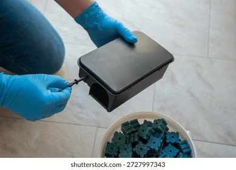
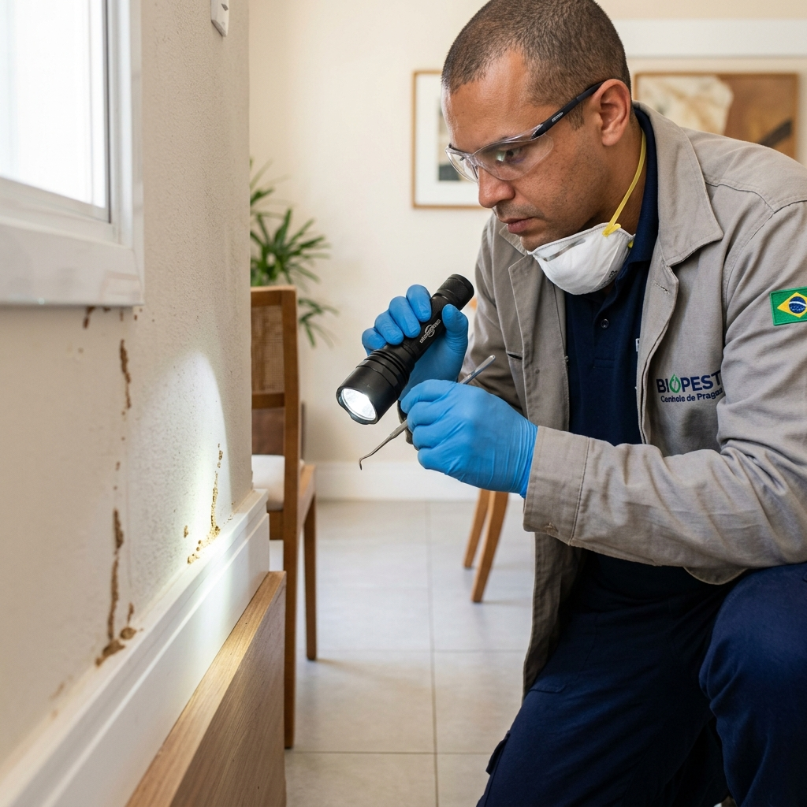

Serviços Especializados e Seguros
Oferecemos tratamentos modernos para controle de pragas urbanas em São Francisco do Conde, Candeias, Madre de Deus, Santo Amaro, Camaçari, Mata de São João e região.

Eliminação de Insetos Rasteiros e Voadores
Controle eficaz de baratas, formigas, mosquitos, escorpiões e aranhas. Utilizamos produtos seguros aprovados pela ANVISA, que não deixam cheiro forte e protegem sua família e animais de estimação.
- ✓ Fim das baratas e formigas
- ✓ Prevenção contra escorpiões
- ✓ Produtos sem cheiro forte
- ✓ Seguro para pets e crianças

Controle e Prevenção de Ratos
Aplicação de iscas e porta-iscas de segurança para erradicar ratos de telhado, ratazanas e camundongos. Proteja seus alimentos e estruturas comerciais contra contaminações.
- ✓ Eliminação rápida do foco
- ✓ Prevenção de contaminações
- ✓ Proteção comercial e residencial
- ✓ Iscas seguras e monitoradas

Proteção de Móveis e Estruturas
Barreiras químicas e tratamento direto na madeira para eliminar cupins de solo e de madeira seca. Preserve seu patrimônio antes que o dano seja irreversível.
- ✓ Fim do pó de cupim
- ✓ Proteção de móveis antigos
- ✓ Preservação estrutural (telhados)
- ✓ Garantia de durabilidade